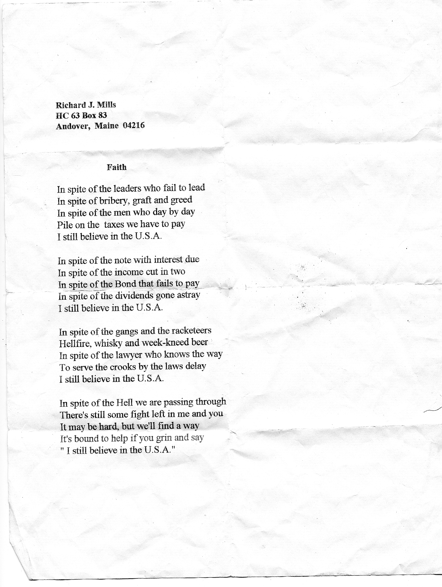

Faith
Transcript of the original scan
Richard J. Mills
HC 63 Box 83
Andover, Maine 04216
In spite of the leaders who fail to lead
In spite of bribery, graft and greed
In spite of the men who day by day
Pile on the taxes we have to pay
I still believe in the U.S.A.
In spite of the note with interest due
In spite of the income cut in two
In spite of the Bond that fails to pay
In spite of the dividends gone astray
I still believe in the U.S.A.
In spite of the gangs and the racketeers
Hellfire, whisky and weak-kneed beer
In spite of the lawyer who knows the way
To serve the crooks by the laws delay
I still believe in the U.S.A.
In spite of the Hell we’re passing through
There's still some fight left in me and you
It may be hard, but we'll find a way
It's bound to help if you grin and say
" I still believe in the U.S.A."
